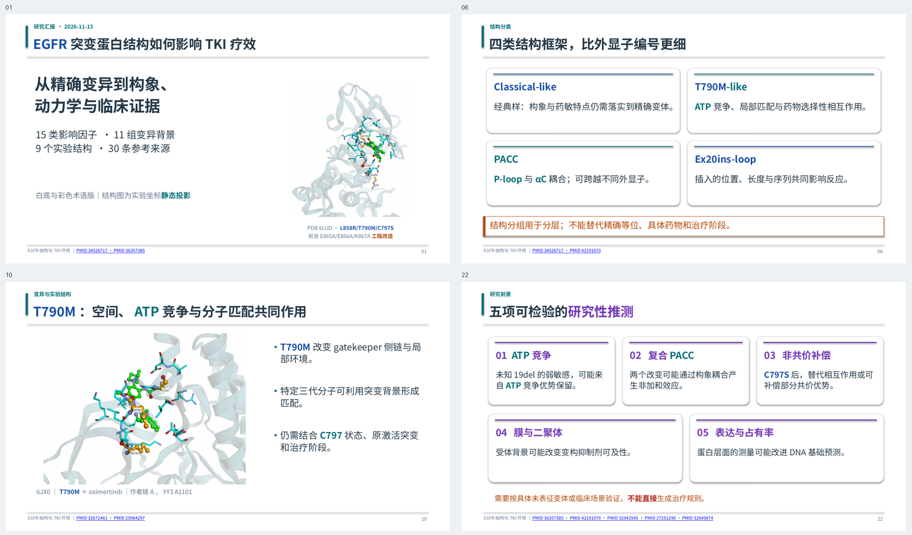
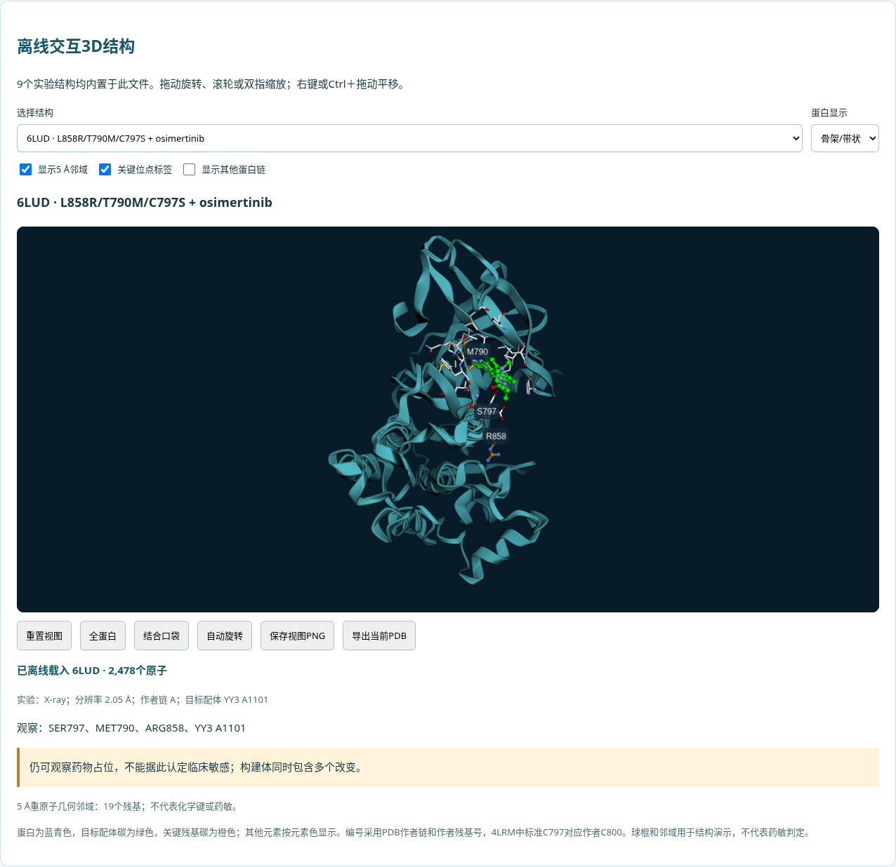

EGFR蛋白结构与TKI疗效
单文件离线报告
完整正文、30条参考来源和9个实验3D结构均已内置。阅读、旋转缩放、结构切换与资料导出无需联网或服务器。
白底彩色术语PPT · 30页
可编辑正文，8个实验结构的内嵌静态图片，附30条来源与逐页备注。变异为蓝色，结构/动力学为青绿，证据/推测为紫色，重要边界为橙红。
使用Noto Sans CJK SC；如本地字体替换影响排版，可参考PDF。PPT图片为静态投影；可旋转结构在配套离线HTML中。

单文件离线HTML使用方法
- 下载ZIP并解压，里面只有一个HTML文件。
- 在本机用Chrome或Edge打开该HTML。文件可自由改名或移动，不依赖其他文件。
- 选择结构后可拖动旋转、滚轮缩放；论文原文等外部链接在联网时使用。
GitHub或聊天客户端可能展示HTML源码；请保存HTML后在本机浏览器中打开。

2026-11-15。实验结构、工程构建体及作者/标准编号边界均在报告中说明。本报告不生成患者个体处方。